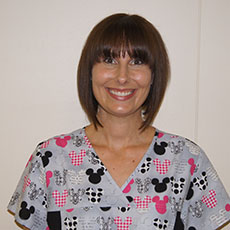

Se habla español
!Bienvenidos a nuestras familias latinas! Llame a la oficina para su cita con Dr. Clepper-Faith.
Hours
Mon-Fri 8:30am-5:30pm
(closed 12:30pm-1:30pm)
Sat 9:00am-Noon
Sunday Closed
Our Staff
Office Staff

Heather Christian, Office Manager
Heather is a Certified Medical Administrative Assistant.
She is originally from Winston-Salem and lives in Mebane with her husband and twins.
In her spare time, Heather enjoys spending time with her family, camping, hiking, and watching football.
Katie lives in Durham, NC with her husband and daughter. She received her first undergraduate degree in Communications and English from The University of North Carolina at Chapel Hill and returned several years later to obtain her second bachelor’s degree in Nursing. She is a Tar Heel through and through! Katie comes to us from the Duke Pediatric Intensive Care Unit. In her spare time, she enjoys being active with her husband and daughter, reading, and volunteering at church.
Rebecca Biggerstaff, RN & Vaccine Coordinator
Becca is from the Grandfather Mountain area of North Carolina and now resides in Hillsborough. She became an RN in May of 2014 after attending Mayland Community College and is currently pursuing her BSN through UNC Wilmington. Becca hopes to gain valuable experience here that will assist her in reaching her goal of becoming a neonatal nurse practitioner.
In her spare time, she enjoys visiting family and friends back home in the mountains, going to church, and relaxing outdoors in the beautiful world God created.
Nicole Garrett, CMA
Nicole is a Certified Medical Assistant. She has been a CMA since 2005. She is originally from Durham and lives in Butner with her husband and children.
In her spare time, she enjoys spending time with her family and watching football.